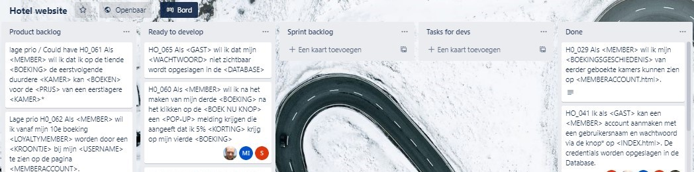

Mijn rol tijdens het project ''Hotelreserveringssysteem'' tijdens de bootcamp
Naast het werken aan de HTML en CSS van de site zat mijn bijdrage als informatie-analist in een aantal onderdelen. Deze onderdelen worden hieronder uitgelegd.
(HTML is de inhoud van de site, denk aan tekst. CSS is de styling/opmaak van de pagina)
Coördinerende rol
Als projectgroep hebben we gewerkt via de SCRUM-werkwijze met wekelijkse sprints. Vóór elke sprint werd een planning gemaakt waarin werd bepaald wat er die week gemaakt werd.
Na elke sprint was er een review waarbij de klant zijn mening kon geven over de deelproducten (increments). Op basis hiervan ontstaan nieuwe of veranderende wensen. Als informatie-analist had ik een coördinerende rol in SCRUM.
Denk aan het beheer van het Trello bord, opzet maken voor de sprint-reviews en het prioriteren van de sprint-backlog.
Klantgesprekken
In het begin van een project is het van belang om met de klant in gesprek te gaan, om zo een volledig beeld te krijgen van de klantbehoefte.
De klant heeft vaak een globale wens, die ik als informatie-analist verscherp door elicitatie. Eliciteren is het uitlokken van informatie.
Ook heb ik als informatie-analist een belangrijke rol in het actief meedenken met de mogelijkheden voor de klant. Wat wil de klant nu écht oplossen of verbeteren?
Documenteren
Toen de wensen en behoeftes van de klant in beeld waren gebracht, is dit vertaald naar een UML-klassediagram. De UML-klassediagram geldt als basis voor het technische ontwerp.
In deze fase ben ik als informatie-analist een vertaler van de klantwens naar de developers.De klanswens wordt steeds kleiner gemaakt, wat leidt tot requirements.
Zie in de afbeelding voorbeelden van requirements in het Trello bord:

Valideren & beheren
Valideren
De validatie kun je zien als een check door de klant: is dit (deel)resultaat daadwerkelijk wat de klant heeft bedoeld?
Validatie kan vóór het technisch bouwen via wireframes. Een wireframe is een schets van een beoogde pagina.
Beheren
Het beheren van requirements, wijzigingen, projectscope etc. Hier heb ik als informatie-analist een requirements-document voor opgesteld.
Het belangrijkste doel van een requirementsdocument is: overzicht creëren door toegang tot centrale informatie.